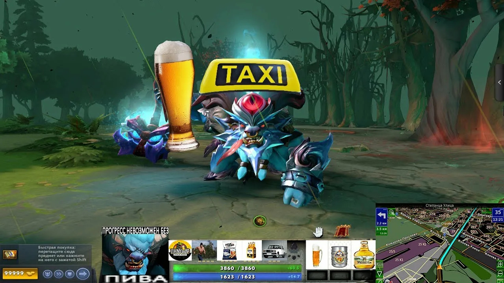

Обо Мне

Йоу
«НеформаLL». Короче, я тот самый чел, который умудряется совмещать игру nu-metal мусор и задротство в IT.
В музыке я вообще даун. Могу раздать в трусы на барабанах, запилить хуйню на электрогитаре и даже что-то там подвыть в микрофон. Но мой самый жесткий скилл и главный кайф — это бас. Тут у меня опыта дохуя.
Когда делать нехуй, я залипаю в компы. Как тру-гей, скупаю все AAA-игры и прочие тайтлы. Само собой, я досконально ебусь за компьютерное железо, так что собрать топовый пека — изи. Ну и чтобы мозги окончательно не усохли, потихоньку кожу на Python и клепаю код на HTML.
В общем, если нужен басист с прямыми руками или просто хотите перетереть за железки и игры — не пишите, ИДИТЕ НАХУЙ.
Места Отбывания А.K.A колонии строгого режима
- 2015-2026 Шарашкина контора МБОУ СОШ 59
- 2026- н.в ввгу IT-hub